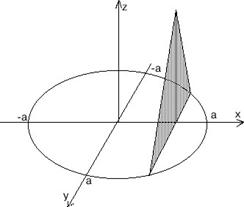

П 25 №24
Найдите объём тела, основанием которого является круг с радиусом
 , а сечение плоскостью, перпендикулярной
фиксированному диаметру круга, представляет собой равнобедренный треугольник высотой
, а сечение плоскостью, перпендикулярной
фиксированному диаметру круга, представляет собой равнобедренный треугольник высотой
 .
.
, а сечение плоскостью, перпендикулярной
фиксированному диаметру круга, представляет собой равнобедренный треугольник высотой
.Решение:
Выберем систему координат, начало которой совпадает с центром
круга.
Сечение тела плоскостью, перпендикулярной оси  , - равнобедренный треугольник с
основанием и высотой ;
, - равнобедренный треугольник с
основанием и высотой ;
, - равнобедренный треугольник с
основанием и высотой ;
,
.

Ответ: